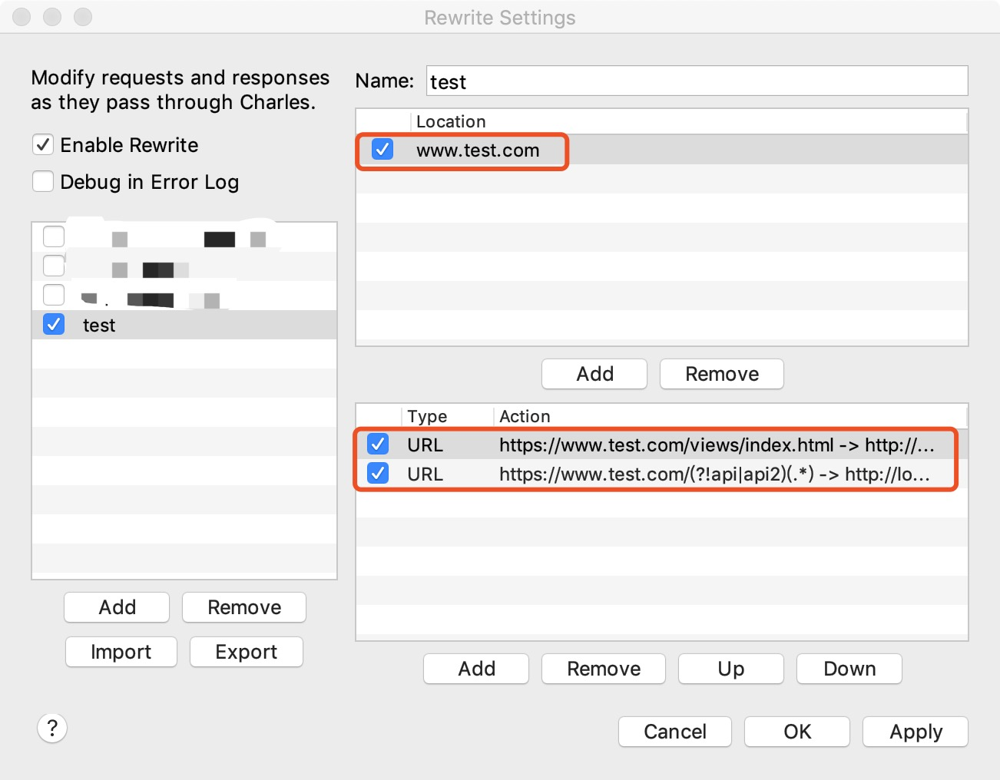
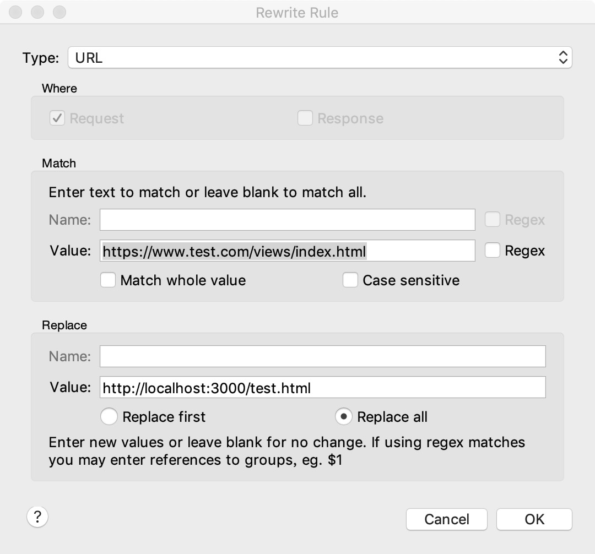
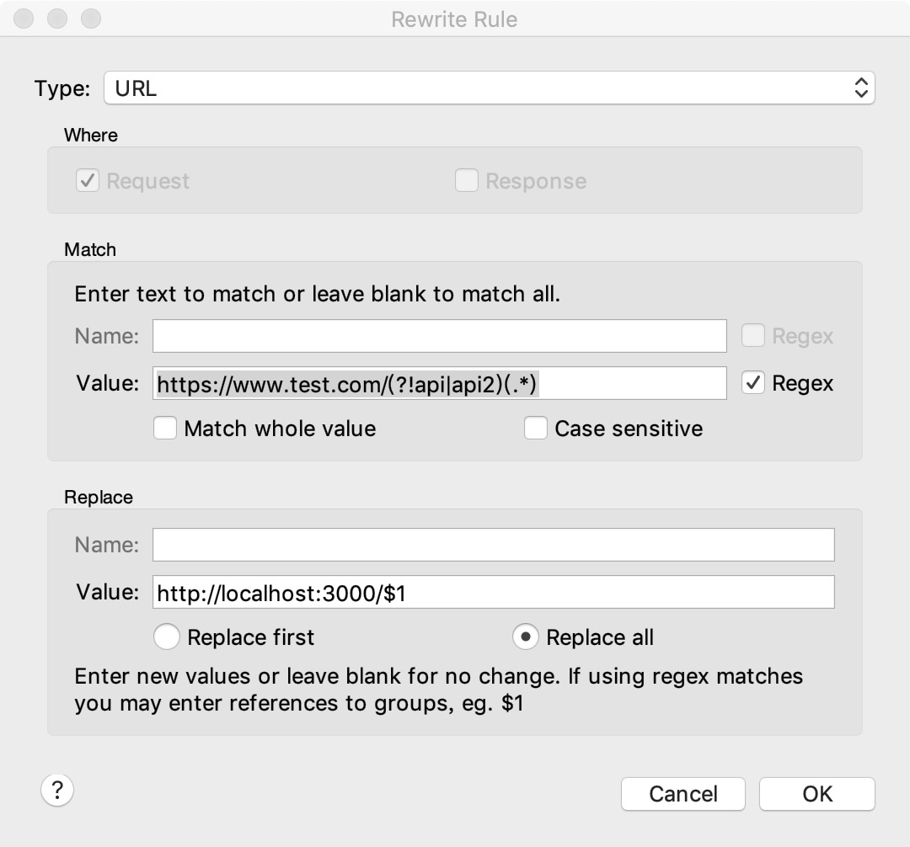

Go to Github Home Page 使用 charles 替换线上页面的静态资源请求，可以实时调试webview中的页面。 关于 android 抓包自 Android 7.0 起，有一个名为“Network Security Configuration”的新安全功能。这个新功能的目标是允许开发人员在不修改应用程序代码的情况下自定义他们的网络安全设置。如果应用程序运行的系统版本高于或等于24，并且targetSdkVersion>=24，则只有系统(system)证书才会被信任。所以用户(user)导入的Charles根证书是不被信任的。需要指定信任用户安装的根证书从而可以实现抓包。 如果是我们自己开发的app，则可以直接修改配置文件实现信任用户证书从而实现抓包。 设置 charles 抓包，细节参考 https://www.charlesproxy.com/documentation/proxying/ssl-proxying/ 。 使用 charles 拦截并替换静态假设要对 https://www.test.com/views/index.html 页面进行拦截和替换，其配置结果为： 步骤如下： 点击 Tools-Rewrite…, 打开 Rewrite Settings 窗口。 点击 add ，名称为任意字符串，添加 www.test.com 域名。 添加第一个url拦截规则：Match: https://www.test.com/views/index.htmlReplace: http://localhost:3000/test.html表示将线上特定的html页面替换为本地的请求，如下图： 添加第二个url拦截规则：Match: https://www.test.com/(?!api|api2)(.*)Replace: http://localhost:3000/$1表示将所有不是以api或api2开头的url替换为本地的请求，如下图： 好了，此时访问线上 https://www.test.com/views/index.html 页面，实际上访问的是本地的代码（除以api、api2开头的数据请求以外），可以实现本地前端代码调试线上数据的目的。 最后需要注意，设置https抓包的时候，在 Proxy-SSL Proxying Settings 中，需要添加相应域名以允许charles抓包。 ← 上一篇 下一篇→ To show LiveRe comment, please use JavaScript 目录 1. 关于 android 抓包2. 使用 charles 拦截并替换静态